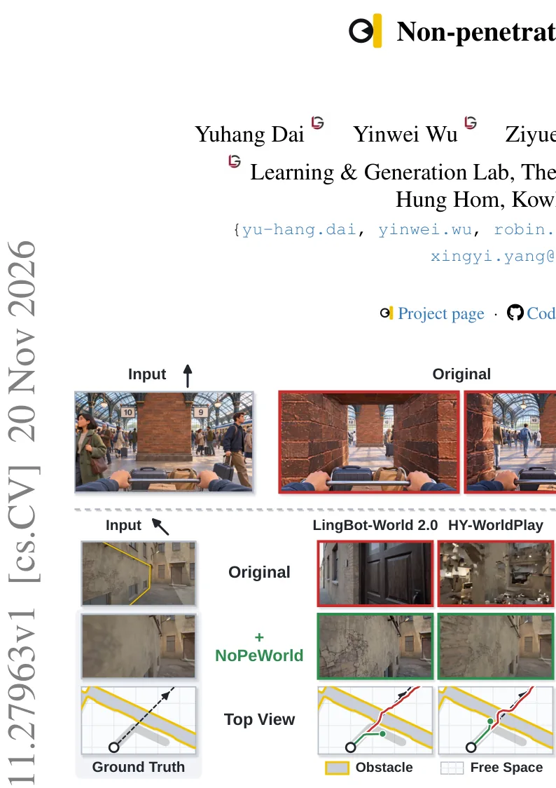
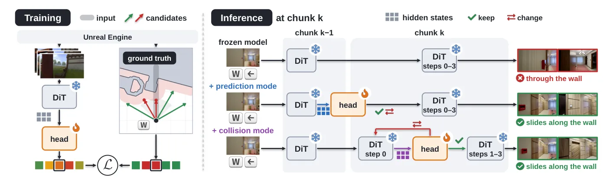
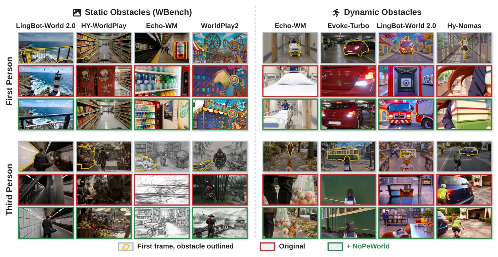

O Problema da 'Plataforma 9 ¾' em Modelos de Vídeo
Os modelos de mundo (world models) de vídeo estão se tornando cada vez mais capazes de gerar sequências temporais coerentes baseadas em comandos de usuário, seja através de poses de câmera ou entradas de teclado. No entanto, eles compartilham uma falha fundamental de física: a incapacidade de respeitar obstáculos sólidos. Em termos simples, esses modelos comportam-se como se paredes fossem a 'Plataforma 9 ¾' de Harry Potter, permitindo que a câmera ou o agente atravessem barreiras físicas sem colidir ou deslizar ao longo delas.
Essa falha não é apenas um erro estético; ela revela uma desconexão entre a intenção do usuário e a plausibilidade física do mundo gerado. Quando um usuário instrui uma câmera a se mover para trás em um corredor, e a câmera atravessa a parede final, o modelo falha em impor restrições básicas de não penetração. Em simuladores gráficos e motores de jogo, isso é resolvido há décadas através de detecção e resposta a colisões. Nos modelos de vídeo atuais, esse mecanismo está ausente, pois o treinamento geralmente ocorre em trajetórias livres de obstáculos, tornando comandos que levam a colisões casos fora da distribuição (out-of-distribution).
Soluções óbvias, como pedir explicitamente ao modelo via prompt de texto para 'parar' ou 'deslizar', mostraram-se ineficazes. Outras abordagens, como usar estimadores de profundidade externos para detectar obstáculos e interromper o movimento, exigem processamento pós-hoc adicional para cada frame gerado e tendem a cortar a intenção do usuário de forma abrupta, muitas vezes parando o movimento completamente em vez de ajustá-lo suavemente.

A Intuição: O Modelo Já Sabe Onde Está a Parede
O insight central deste trabalho é surpreendente: os geradores de vídeo, especificamente aqueles baseados em Transformers de Difusão (DiT), já codificam implicitamente a informação necessária para prever colisões, mesmo antes de sintetizar os pixels finais. Estudos anteriores indicaram que modelos de difusão de vídeo capturam estrutura 3D e plausibilidade física. Os autores descobriram que essa capacidade se estende à previsão de penetração.
Os estados ocultos (hidden states) do DiT contêm sinais robustos sobre a proximidade de obstáculos. Isso significa que o modelo 'sabe' onde estão as paredes durante o processo de denoising, mas seu mecanismo de geração padrão não utiliza esse conhecimento para restringir o movimento. Em vez de construir uma nova rede de percepção externa, o NoPeWorld explora essa informação latente já existente no modelo gerador.
Para validar essa hipótese e medir a gravidade do problema, os autores introduzem o NoPeBench, um benchmark específico para avaliar a não penetração. Diferente de benchmarks anteriores que evitam colisões, o NoPeBench testa deliberadamente cenários onde comandos levam a obstáculos, medindo se o modelo consegue manter trajetórias seguras ou corrigir aquelas que violariam a física.
O Método NoPeWorld: Detecção e Correção Interna
O NoPeWorld é um framework leve que opera em duas etapas principais: detecção de risco e resposta de ação. A arquitetura baseia-se em um cabeçote de previsão (prediction head) pequeno e leve, treinado sobre os estados ocultos de um DiT congelado. O DiT principal não é ajustado (fine-tuned), preservando seu conhecimento prévio de geração de vídeo.
Durante o treinamento, o cabeçote é exposto a trajetórias de movimento junto com o mapa de ocupação 3D real (ground truth) obtido de simuladores como o Unreal Engine. O cabeçote aprende a prever dois rótulos cruciais: se uma ação candidata causará uma colisão (penetração) e a distância até o obstáculo. Essa supervisão geométrica permite que o cabeçote aprenda a mapear os estados latentes do vídeo para informações espaciais de colisão.
Na inferência, o framework opera em dois modos para cobrir diferentes estágios do processo de geração. No modo de colisão (Collision mode), o cabeçote lê os recursos de denoising inicial do chunk atual de vídeo para detectar se a ação planejada já está comprometida. No modo de previsão (Prediction mode), ele usa os recursos do chunk anterior para prever se a ação futura causará penetração no próximo chunk. Isso permite uma correção proativa antes que o vídeo seja totalmente gerado.

Substituindo Ações Inseguras por Alternativas Seguras
A detecção de colisão é apenas metade da solução; a outra é a resposta. Se o cabeçote identifica que uma ação (por exemplo, mover a câmera para trás) levará a uma penetração na parede, o NoPeWorld não simplesmente para o vídeo. Em vez disso, ele busca uma ação segura alternativa que melhor preserve a intenção original do usuário.
O objetivo é minimizar o 'arrependimento' (regret) da ação. Se o usuário quer recuar, e há uma parede atrás, a ação segura seria deslizar lateralmente ao longo da parede, mantendo a direção geral recuar o máximo possível sem violar a restrição física. O framework avalia várias ações candidatas e seleciona aquela que maximiza a similaridade com a intenção original, enquanto garante que a distância ao obstáculo seja não negativa.
Esse processo de substituição é feito de forma diferente para cada modo. No modo de colisão, a ação é corrigida com base no estado imediato. No modo de previsão, a ação é ajustada com base na previsão futura, permitindo uma transição mais suave. A combinação desses dois modos permite que o modelo lide tanto com colisões iminentes quanto com trajetórias que gradualmente se aproximam de barreiras.
Resultados: Redução Drástica de Violações
Os experimentos foram conduzidos em seis modelos de mundo de vídeo open-source diferentes, incluindo LingBot-World 2.0, HY-WorldPlay, Echo-WM, Evoke-Turbo, WorldPlay2 e Hy-Nomas. O NoPeWorld foi aplicado a todos eles sem re-treinamento dos geradores principais, utilizando apenas o cabeçote leve treinado em um subconjunto de validação.
Os resultados quantitativos mostram uma melhoria significativa. A taxa média de violação física (penetração ou apagamento de obstáculos) caiu de 74% no modelo original para 16% com o NoPeWorld. Em modelos específicos como o LingBot-World 2.0, a taxa de violação caiu de 89% para 4% no modo de previsão. Além disso, o Score de Intenção Segura (SIS) aumentou substancialmente, indicando que o modelo não apenas evita colisões, mas também preserva melhor o movimento pretendido pelo usuário.
Comparado a métodos de base, como prompts de texto ou estimadores de profundidade externos, o NoPeWorld superou consistentemente em métricas combinadas de segurança e intenção. Enquanto o prompt de texto teve efeito quase nulo e o estimador de profundidade externa, embora eficaz na detecção, tendia a interromper o movimento de forma brusca ou não corrigia a trajetória suavemente, o NoPeWorld conseguiu um equilíbrio superior entre segurança física e continuidade da ação.

Generalização e Robustez
Um aspecto notável do NoPeWorld é sua capacidade de generalização zero-shot. O cabeçote de previsão foi treinado em cenas específicas, mas foi testado com sucesso em imagens de domínio aberto, cenários com terceira pessoa, visões em primeira pessoa e obstáculos em movimento. Isso sugere que a informação de colisão codificada nos estados do DiT é robusta a variações de domínio e ponto de vista.
A avaliação em imagens reais (Task 3) foi realizada usando Julgadores de Linguagem Visual (VLMs) validados contra anotações humanas e geometria 3D. Os VLMs confirmaram que as trajetórias geradas com o NoPeWorld respeitam os limites físicos em quase todos os casos testados, enquanto os modelos originais falhavam consistentemente. Essa generalização é crucial para a aplicação prática em ambientes não estruturados.
Além disso, o método mostrou-se eficaz tanto para obstáculos estáticos quanto dinâmicos. Em cenários com obstáculos em movimento, o NoPeWorld conseguiu ajustar a trajetória da câmera para evitar colisões, demonstrando que a representação latente do DiT captura não apenas a geometria estática, mas também a dinâmica temporal dos objetos.
Limitações e Escopo
Apesar dos resultados promissores, o trabalho tem limitações importantes. O NoPeWorld foca exclusivamente na restrição de não penetração. Ele não lida com interações físicas mais complexas, como empurrar objetos, carregá-los ou quebrá-los. A abordagem assume que os obstáculos são sólidos e impenetráveis, mas não modela a dinâmica de contato ou a deformação de objetos.
Outra limitação reside na dependência de dados de treinamento para o cabeçote de previsão. Embora o DiT principal seja congelado, o cabeçote precisa ser treinado com rótulos de colisão precisos. No experimento, esses rótulos foram obtidos de simuladores como o Unreal Engine. A eficácia do método em cenários onde a geometria 3D não está disponível ou é extremamente ruidosa pode ser desafiadora, embora os resultados de generalização sugiram robustez.
Além disso, o overhead computacional, embora baixo comparado a redes externas, ainda existe. A inferência do cabeçote adiciona um passo adicional ao pipeline de geração. No entanto, dado o tamanho pequeno do cabeçote, esse custo é mínimo comparado ao custo de geração do próprio DiT.
Finalmente, o benchmark NoPeBench, embora inovador, ainda é um subconjunto limitado de desafios de física. A avaliação em cenários do mundo real, com iluminação variável, oclusões complexas e interações com múltiplos agentes, permanece como uma fronteira aberta para futuros trabalhos.
Conclusão
O NoPeWorld apresenta uma solução elegante para um problema fundamental em modelos de mundo de vídeo: a falta de respeito por restrições físicas básicas. Ao explorar a informação latente já presente nos estados ocultos de Transformers de Difusão, o método evita a complexidade de redes externas e mantém a coerência temporal e espacial dos vídeos gerados.
A redução de 74% para 16% nas taxas de violação, combinada com a preservação da intenção do usuário e a generalização zero-shot, demonstra que os geradores de vídeo estão mais conscientes de sua geometria interna do que se pensava. Este trabalho abre caminho para modelos de mundo mais confiáveis e fisicamente plausíveis, um passo essencial para aplicações em simulação, robótica e realidade virtual.
Os autores disponibilizam o código, o benchmark NoPeBench e os pesos do modelo, convidando a comunidade a continuar explorando as fronteiras da física em modelos generativos, desde a não penetração até interações mais complexas de contato e manipulação.
O que fica
- Modelos de mundo atuais falham em respeitar colisões, gerando vídeos onde câmeras atravessam paredes.
- O NoPeWorld detecta colisões lendo estados ocultos de Transformers de Difusão (DiT), sem necessidade de redes externas.
- Um pequeno cabeçote de previsão treinado sobre o DiT congelado substitui ações inseguras por alternativas seguras.
- O método reduz violações físicas de 74% para 16% em seis modelos diferentes, com generalização zero-shot.
Paper original: Non-penetrating World Models
Comentários
Nenhum comentário ainda. Seja o primeiro.